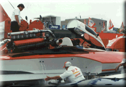

The SUPER FAN Pit Pass is tops for fans of racing vehicles. This gets you into the Unlimited Hydroplane "Hot Pits" for ALL days of the event. No other Pit Access pass allows access to this section of the Dodge pits. Only the crew can get closer to a boat!
The SUPER FAN pass is limited in availability, and is $125. Note that this is strictly a 'walking' pass, and does not normally include a seat in one of the viewing areas. If you would also like a seat in area #3 or #4, it is $175.
For parking information, see the Dodge Pits Parking - Race Days info.

![[Photo of the Bud team]](b_bud2.gif)
 Return to the Ticket Info page.
Return to the Ticket Info page.
All contents Copyright © 1997 Spirit of Detroit THUNDERFEST, except where noted.
Web page created by Brian Reed.
 Return to the Top THUNDERFEST page.
Return to the Top THUNDERFEST page.
All Rights Reserved.